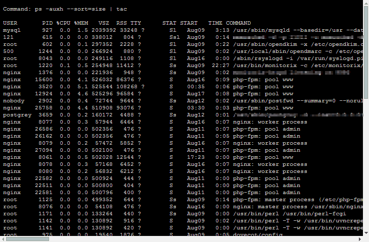
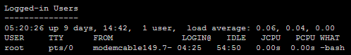
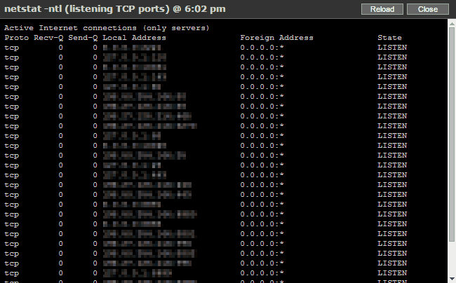
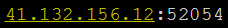

Table of Contents
- Introduction
- General Requirements
- Installation
- Requirements for Specific Blocs
- Configuration
- Screenshots
Introduction
Vpsinfo is a Linux server monitoring script, written in PHP, that provides web access to system status information. It gathers the output from several common Linux commands into one web page, providing a quick overview of the system's current state.
While designed for use on a Linux Virtual Private Server (Virtuozzo or OpenVZ), Vpsinfo also works fine on a dedicated server. When installed on a dedicated machine VPS-specific information is automatically excluded.
Please note that, on Virtuozzo and OpenVZ servers, the small beanc helper app may be required to access VPS status information.
vpsinfo shows the following outputs:
top-
/proc/user_beancounters(VPS resources) -
netstat -nt(current TCP connections) -
netstat -ntl(listening TCP ports) -
pstree(tree view of running processes) -
ls -a /tmp(and ls -al /tmp ) -
vnstat(network traffic at the interface) -
mytop(MySQL stats) -
mysqlreport(perl script, MySQL stats) - Status of daemon processes
- Top summary section:
- Values for oomguarpages and privvmpages (free RAM and swap usage)
- Data transfer today through the network interface (from vnstat)
- Current number of TCP connections
- Web server threads, MySQL threads and queries (from mytop or mysqlreport)
- Disk usage
Optional Third-party Software
These applications are not required to run vpsinfo, but if installed they are used to gather additional information
- vnstat (data transfert monitoring at the network interface) Highly recommended!
- mytop (MySql monitoring)
- mysqlreport (perl script, MySql monitoring).
General Requirements
Installation
For the time being, installation documentation is limited to CentOS. Please share any relevant information you may have that may complete this documentation, and I will include it.
Perl
Intallation on CentOS 6.x:
yum install \
perl-DBI \
perl-DBD-mysql --enablerepo=rpmforge-extras*rpmforge http://repoforge.org/ (other perl modules may be needed)
Gcc
Intallation on CentOS 6.x:
yum install \
gcc \
glibc-devel \
glibc-headers(may be incomplete)
Web Server
Nginx
Server configuration bloc example:
server {
listen 123.45.67.89:443 ssl;
server_name VPSINFO.MYSERVER.COM;
root /var/www/VPSINFO;
### RESTRICTION ###
# your restrictions
### HEADERS ###
add_header Cache-Control "public";
### SSL - TLS ###
add_header Strict-Transport-Security max-age=31536000;
ssl_session_cache shared:SSL:1m;
ssl_certificate /etc/pki/https/PUBLIC_CERTIFICATE.crt;
ssl_certificate_key /etc/pki/https/PRIVATE_KEY.pem;
ssl_client_certificate /etc/pki/CA/SELF_SIGNED_CA_CERTIFICATE.crt;
ssl_verify_client on;
ssl_protocols TLSv1.2 TLSv1.1 TLSv1;
ssl_session_timeout 15m;
ssl_ciphers HIGH:!MD5:!aNULL:!eNULL:!NULL:!DH:!EDH:!kEDH:!AESGCM;
ssl_prefer_server_ciphers on;
location / {
try_files $uri $uri/ /index.php?$args;
}
### FAST CGI CONFIGURATION
location ~* \.php$ {
try_files $uri =404;
fastcgi_pass unix:/var/run/php-fpm-www.sock;
fastcgi_split_path_info ^(.+\.php)(/.+)$;
fastcgi_intercept_errors off;
fastcgi_index index.php;
fastcgi_param SCRIPT_FILENAME $document_root$fastcgi_script_name;
include fastcgi.conf;
fastcgi_cache_valid 60m;
}
### LOGGING ###
}Note the ssl_client_certificate. This is actually the server's public certificate, and the private key is installed in my desktop/browser. The first time, in a single run of my browser, the server request a certificate; the browser is aware of my private key and offers to send one of my keys, which I do; then I gain access to my VpsInfo page.
The ssl_verify_client = on prevents access without a verified certificate.
Using a certificate for authentication (vs password) avoids the possibility of password brute force.
Requirements for Specific Blocs
vnstat
Installation on CentOS 6.x:
$ yum install vnstat --enablerepo=rpmforgeConfiguring vnstat:
- get the name of the network interface:
$ ifconfigyou should see a venet0 or a eth0 for KVM's (do not use venet0:x).
update
/etc/sysconfig/vnstat:VNSTAT_OPTIONS="-i venet0"you may also need to update
/etc/vnstat.conf:interface "venet0"make sure
/etc/cron.d/vnstatexists and contains:*/5 * * * * vnstat /usr/sbin/vnstat.cronyou can test with:
$ vnstat -trMySQL Report
The report should use the included mysqlreport_a.pl. For MySql earlier to v5.0, mytop seems to be the other option.
mysqlreport A
The included mysqlreport_a.pl is a modified version of mysqlreport (2008) compatible with MySQL/Percona v5+.
mysqlreport B
The included mysqlreport_b.pl is a modified version of mysqlreport (2015) compatible with MySQL/Percona v5+ & MariaDB (according to the author).
mytop
Installation on CentOS 6.x:
$ yum install mytop --enablerepo=epelNote: this option is untested. Mytop was built for MySQL 3.22.x, 3.23.x, and 4.x., but is said to work with v5.0 .
beanc
beanc is a 10 lines C program that fetches the old, but still valid, /proc/user_beancounters data on a Linux Virtuozzo v.3 or OpenVZ VPS (Virtual Private Server).
Installation on CentOS 6.x:
$ cd VPSINFO-FOLDER-PATH/installation/beanc/
$ sh install.shConfiguration
This is a partial list of configuration entries. For the complete list and description, please refer to config.php.
$vnstat
0 = disabled
1 = enabled
$mysql_mon
0 = none
1 = mytop
2 = mysqlreport_a (mysql/percona)
3 = mysqlreport_b (mysql/percona, MariaDB)
$mysql_mon
0 = none
1 = mytop
2 = mysqlreport_a (mysql/percona)
3 = mysqlreport_b (mysql/percona, MariaDB)
Database Access
Not needed if $mysql_mon = 0.
Socket has priority if defined.
$my_socket = '/var/lib/mysql/mysql.sock';
Then host IP if no socket. Avoid 'localhost', save a dns lookup.
$my_host = '127.0.0.1';
$my_port = '3306';
Only required by mytop
$my_db = 'mysql';
And authentication.
$my_user = 'USERNAME';
$my_pass = 'PASSWORD';
$userhome = '/USERNAME';
$processes
crond dovecot nginx master memcached monitorix mysqld php-fpm rsyslogd sshd vsftpd miniserv
Process names that appear in a ps -e command output are shown as 'up'.
Screenshots
Main page

Pop-ups
Top
Popup:

 Popup:
Popup:

 Popup:
Popup:

Netstat
 Popup:
Popup:

 Popup:
Popup:

Whois
In the netstat list:

In the footer of the netstat bloc:
Popup:

Vnstat
Clic any one:
 Popup:
Popup:

MySQL Report
Popup:

Temp files
 Popup:
Popup: